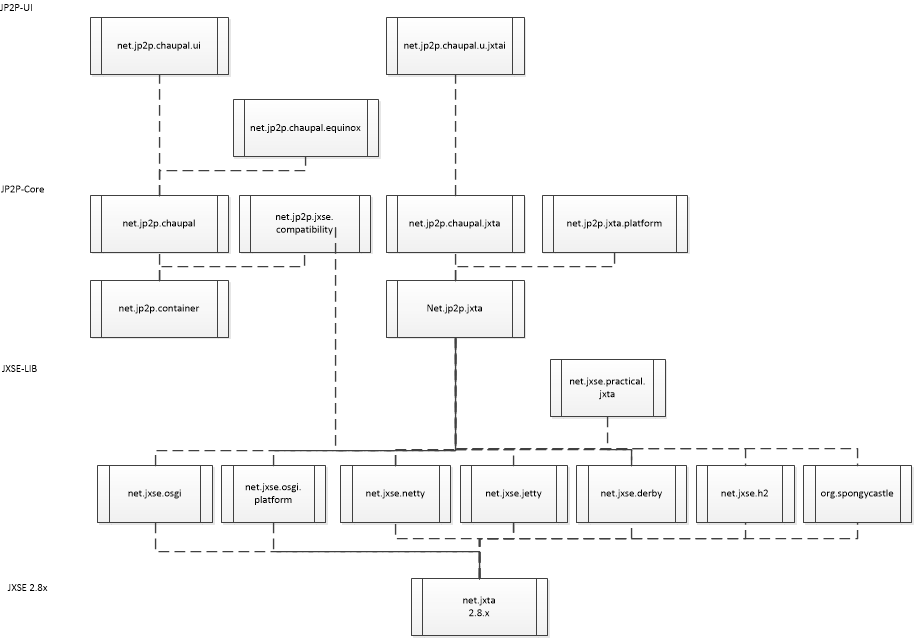

The Chaupal JP2P Architecture aims to provide a generic container
structure for JAVA based peer to peer (P2P) applications, and tools to
make the development of P2P applications a lot easier. The
architecture contains a number of bundles, divided over three (GitHub)
projects, that each add a layer of functionality to Java P2P. The
bundles that make Chaupal are depicted below

At the bottom we see the JXSE 2.8x library, formerly known as JXTA
TM.
The source code of this library is divided over a number of bundles
that make JXSE-LIB.Although these are OSGI bundles, they have no
dependencies with OSGI, so they can be deployed as POJO's. One bundle
uses the others: net.jxse.practical.jxta, which implements the code of
the corresponding
book.
With respect to the original code, the 2.8x version of JXTA
TM
makes a functional distinction between:
- net.jxta: core functionality
- net.jxta.platform: configuration code (i.e. NetworkManager and
NetworkConfigurator)
- Third party additions (Jetty, Netty, Derby, etc.)
The level of J
P2P Core implements the JP2P container. This
is also a bundle which can be used as a POJO. The container is not
dependent on JXTA
TM either. This is handled by the
net.jp2p.jxta bundle. Only at the level of the four bundles that
complete the JP2P core package, the specific OSGI dependency is made,
all of which provide specific services for the JP2P
container:net,chaupal: general services
- net.jp2p.jxse.compatibility: a bridge that allows existing JXTATM
code to run on the JP2P container
- net.jp2p.chaupal.jxta: JXTATM services
- net.jp2p.chaupal.jxta.platofrm: JXTATM platform
services.
These four bundles use the OSGI declarative service mechanism to
register their services to the JP2P container. If one of these bundles
is not available or not started, the corresponding JP2P services are
not registered, and cannot be used by the JP2P container.
At the top level, there are three bundles that are specific to Eclipse
and Equinox, and these provide tools for the Eclipse RC, such as
templates, perspectives and, in the particular case of
net.jp2p.chaupal.equinox, jp2p services that has dependencies with
equinox code. This bundle will therefore not work on Apache Felix or
Knopflerfish without additional handwork.